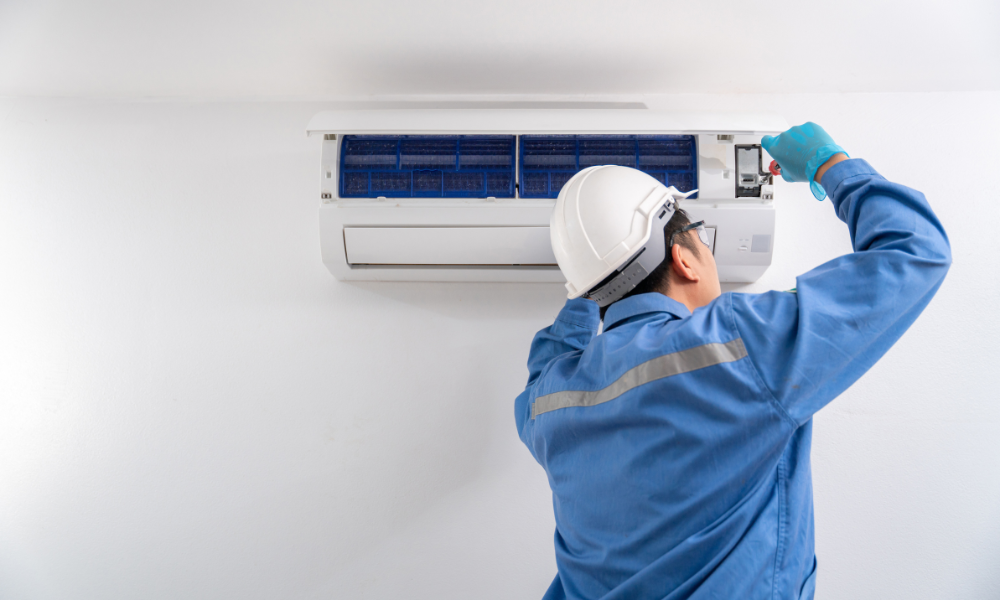
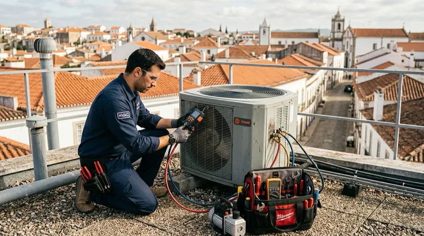
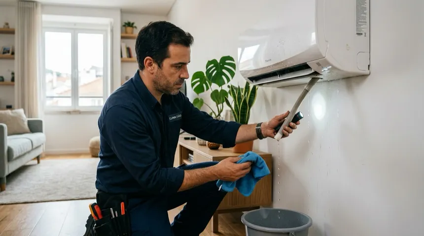

Ar-condicionado não gela: principais causas e quando chamar um profissional
Publicado em · Rotiv Elétrica e Refrigeração
Poucas coisas são tão incômodas quanto ligar o ar-condicionado em um dia quente e perceber que ele não está gelando como deveria. Esse é um dos problemas mais comuns relatados por clientes em Nova Iguaçu e em toda a região do Rio de Janeiro, especialmente durante os períodos de calor mais intenso.
A boa notícia é que, na maioria dos casos, o problema tem explicação técnica e solução. Neste artigo, você vai entender as causas mais comuns de um ar-condicionado que perdeu a capacidade de refrigerar e em quais situações vale a pena chamar um profissional imediatamente.

Ar-condicionado ligado, mas sem refrigerar o ambiente como esperado.Por que o ar-condicionado pode parar de gelar?
O ar-condicionado é um sistema que depende de vários componentes trabalhando em conjunto: gás refrigerante, compressor, evaporadora, condensadora e placa eletrônica. Quando qualquer um desses elementos apresenta falha, o resultado costuma ser o mesmo sintoma percebido pelo usuário — o ambiente não esfria.
Identificar a causa correta é essencial, porque tentar resolver o problema errado pode não trazer nenhum resultado e ainda atrasar o conserto real.
Principais causas de um ar-condicionado que não gela
1. Falta de gás refrigerante (vazamento)
Essa é uma das causas mais frequentes. O gás refrigerante não se "gasta" com o uso normal, então se o nível está baixo, geralmente há um vazamento em algum ponto do sistema. Sem gás suficiente, o aparelho até liga e faz barulho, mas não consegue resfriar o ambiente.
2. Filtros e evaporadora sujos
O acúmulo de sujeira nos filtros e na serpentina da evaporadora reduz a troca de calor e o fluxo de ar, diminuindo bastante a capacidade de refrigeração. Esse problema costuma acontecer em aparelhos que estão há muito tempo sem higienização.
3. Condensadora com fluxo de ar bloqueado
A unidade externa (condensadora) precisa de espaço livre para trocar calor com o ambiente. Quando ela está instalada em um local muito fechado, perto de paredes ou com acúmulo de folhas e sujeira, a eficiência do sistema cai consideravelmente.
4. Dimensionamento incorreto de BTUs
Um aparelho com capacidade (BTUs) menor do que o necessário para o tamanho do ambiente vai trabalhar no limite o tempo todo, sem conseguir atingir a temperatura desejada, mesmo estando em perfeito estado técnico.
5. Problemas no compressor
O compressor é responsável por comprimir o gás refrigerante e fazer o ciclo de refrigeração acontecer. Quando ele apresenta falha, o aparelho pode até ligar normalmente, mas sem produzir frio algum.
6. Termostato ou placa eletrônica com defeito
Falhas eletrônicas podem fazer o aparelho não acionar corretamente o compressor ou interpretar errado a temperatura do ambiente, resultando em um funcionamento aparentemente normal, mas sem o resfriamento esperado.

Verificação técnica de gás refrigerante e componentes do sistema de refrigeração.Sintoma x causa provável
| Sintoma observado | Causa provável |
|---|---|
| Aparelho liga, mas o ar sai morno | Falta de gás ou problema no compressor |
| Ar sai fraco e pouco frio | Filtros ou evaporadora sujos |
| Demora muito para resfriar o ambiente | Condensadora com fluxo bloqueado ou BTUs insuficientes |
| Aparelho liga e desliga sozinho | Possível falha na placa eletrônica ou termostato |
Atenção: manipular o sistema de gás refrigerante ou componentes elétricos do ar-condicionado sem qualificação técnica pode causar danos ao aparelho e riscos à segurança. Esse tipo de intervenção deve ser feito apenas por um profissional.
O que fazer antes de chamar um técnico
Alguns pontos simples podem ser verificados por conta própria antes de acionar um profissional:
- Verificar se os filtros estão visivelmente sujos e limpá-los, se possível
- Checar se a condensadora está com espaço livre ao redor
- Conferir se a temperatura programada no controle está correta
- Observar se o problema acontece em horários de pico de calor, o que pode indicar subdimensionamento
Se, mesmo após essas verificações, o aparelho continuar sem gelar, o mais indicado é uma avaliação técnica completa.
Quando é hora de chamar um profissional
Alguns sinais indicam que o problema não será resolvido sem intervenção especializada:
- O ar sai completamente morno, mesmo com o aparelho ligado corretamente
- Há ruídos estranhos vindos da unidade externa ou interna
- O aparelho desliga sozinho antes de atingir a temperatura
- Existe suspeita de vazamento de gás
- Já faz mais de um ano sem manutenção preventiva
Riscos de continuar usando o aparelho sem manutenção
Ignorar os sinais de mau funcionamento pode agravar o problema original e comprometer outros componentes do sistema, elevando o custo do reparo. Além disso, um aparelho forçando o funcionamento sem gás ou com sujeira acumulada tende a consumir mais energia sem entregar o resultado esperado.

Manutenção preventiva ajuda a evitar perda de desempenho e problemas futuros.Perguntas frequentes
Recarregar o gás resolve definitivamente o problema?
Só se o vazamento for identificado e corrigido antes da recarga. Caso contrário, o gás tende a vazar novamente em pouco tempo.
Higienização resolve quando o ar-condicionado não gela?
Em casos de sujeira acumulada, sim. Mas se a causa for falta de gás ou falha em componentes, apenas a higienização não é suficiente.
Ar-condicionado novo também pode não gelar?
Sim, principalmente quando o dimensionamento de BTUs é incompatível com o tamanho do ambiente ou quando há falha na instalação.
Com que frequência devo fazer manutenção preventiva?
O ideal é realizar uma avaliação técnica ao menos uma vez por ano, ou com mais frequência em aparelhos de uso intenso.
Conclusão
Um ar-condicionado que não gela pode ter causas simples, como sujeira acumulada, ou causas mais técnicas, como vazamento de gás ou falha no compressor. O importante é não ignorar o problema, já que ele tende a se agravar com o tempo e pode elevar o custo do reparo.
Contar com uma avaliação técnica profissional é a forma mais segura de identificar a causa real e voltar a ter o conforto térmico esperado.
Leia também
Veja também outros artigos do nosso blog:
Mora no Rio de Janeiro e tem passado por isso?
A Rotiv Elétrica e Refrigeração realiza diagnóstico técnico, manutenção e recarga de gás com atendimento profissional em toda o RJ.
Solicitar orçamento pelo WhatsApp